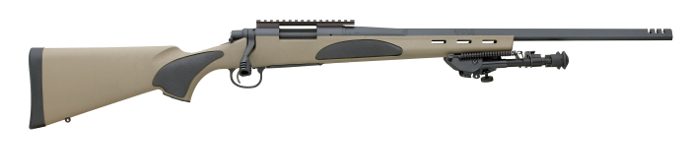

Here we have a Remington 700 chambered in .308. This has been the goto rifle for police and military. Personally I love my 700. It's a very accurate gun (more accurate than me), it's not too heavy, and it feels great to shoot. The only nitpick I have with mine is the bolt is a little tough to work. However, I'm sure than would work out of it if I had the chance to shoot some more, but that is expensive!